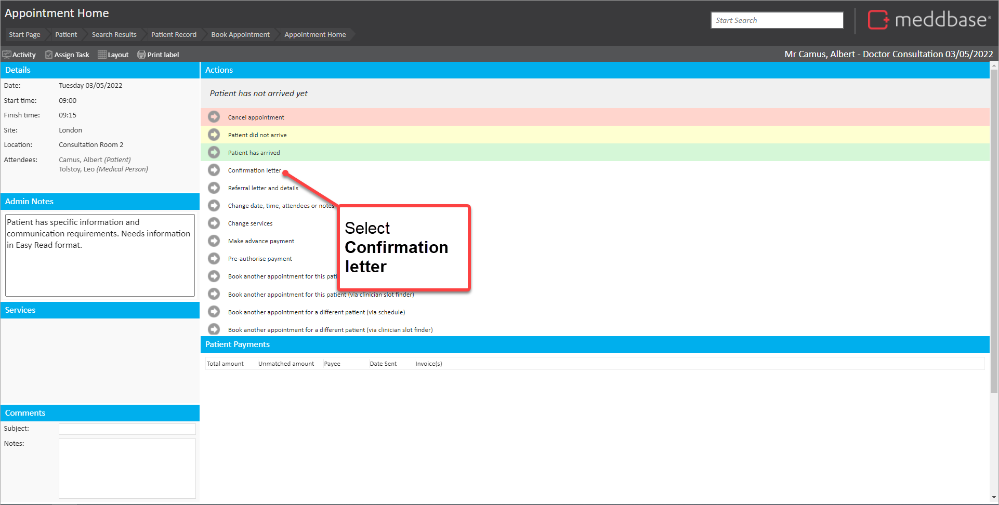
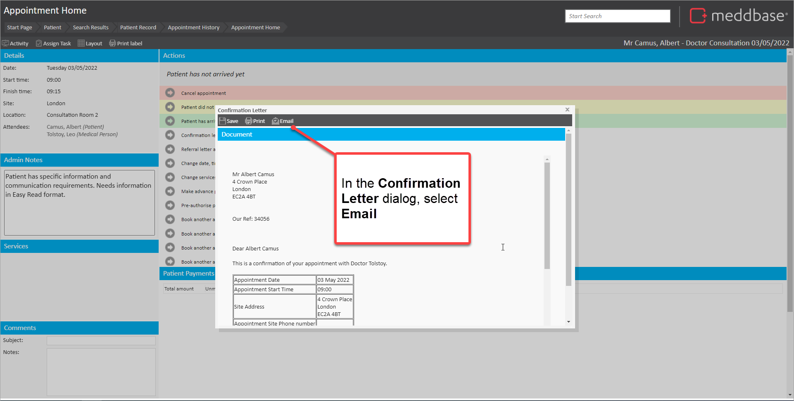
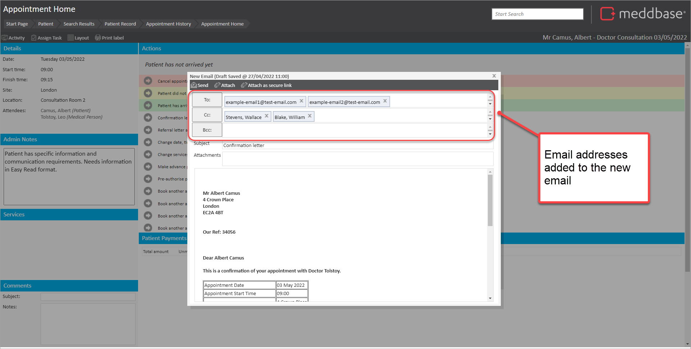
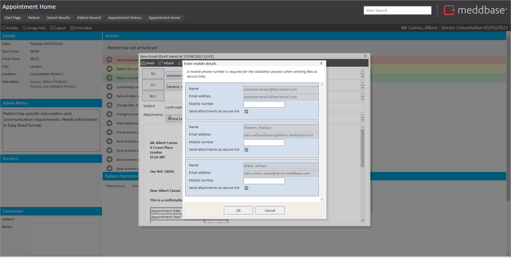
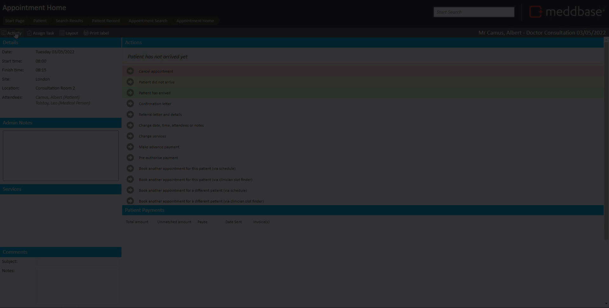

Some of our customers need to email appointment confirmation letters to contacts at their client organisation on an ad-hoc basis. In these contexts, the email recipients are:
To support this, we have extended the Confirmation Letter feature on the Appointment Home page so that users can manually email a booking confirmation letter to any email addresses they choose.
This article shows you what you can do with the feature.
Having made an appointment booking using the Appointment Slot Finder, or Clinician Schedule you can:



There are some useful points to note below.
If you add an attachment as a secure link, when you select Send you will be presented with an Enter Mobile details dialog.

This is because when the recipient selects the link in the email, they will need to verify their identity using a code sent to their mobile phone number.
Email recipients manually added to the New email will not be:
The short video, starting from the appointment home page after the booking, provides an illustrative example of how booking confirmation emails can work.
